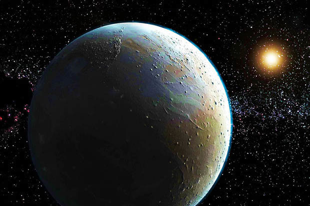

Pluto er en dvergplanet
Pluto er den mest kjente av dvergplanetene i solsystemet. Pluto er oppkalt etter underverdenens gud i gresk mytologi og ble først oppdaget så sent som i 1930.

Pluto går i bane utenfor Neptun og befinner seg fra 30 til 50 ganger avstanden mellom jorda og sola alt etter hvor i banen Pluto er. Det er veldig langt borte fra sola, Pluto bruker mer enn 248 år på en runde. Dermed er det også svært kaldt på Pluto, kanskje helt ned i minus 230 grader Celsius. Ikke rart at Pluto er oppkalt etter romernes gud for dødsriket. Forskerne regner med at Pluto består av stein og is og har en fast overflate. Kanskje finnes det en kjerne av stein og mellomlag av is. Pluto har en tynn atmosfære som består av nitrogen, metan og karbondioksid. Disse gassene stammer fra is på overflaten. Atmosfæren fryser til is eller sublimerer til gass i løpet av Plutos lange runde rundt sola. Pluto har tre måner, Charon, Nix og Hydra.